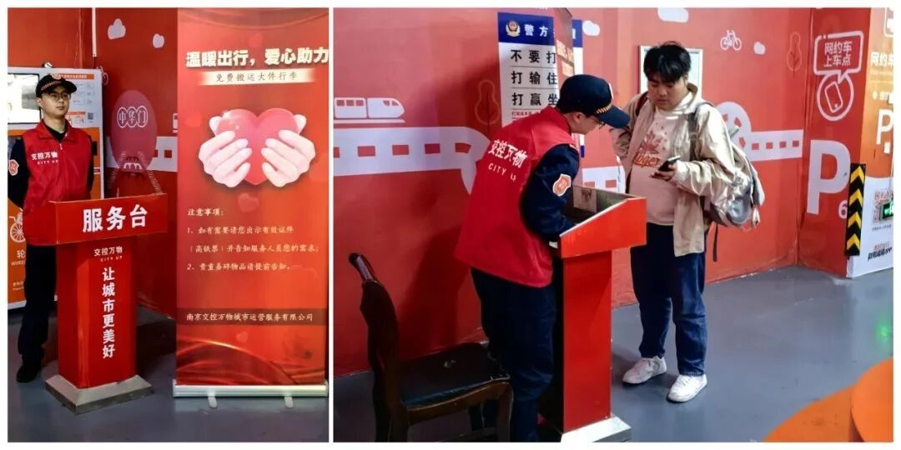

综管办：有协调之名，缺统合之权
对平行行政区和垂直管理部门缺少足够约束力，责任全面，资源与授权却有限。

CASE STORY · 00 / 开篇
案例材料记载，南京南站横跨两个行政区，十余个条块部门与多家服务企业在同一空间各守边界。我们追踪一家政企共创平台企业如何重组服务界面，又为何止步于制度边界。
01 / 困局
高铁、地铁、公交和公路客运在这里“零换乘”。治理结构却沿行政区划、部门条线、资产产权和外包合同分开运转。
对平行行政区和垂直管理部门缺少足够约束力，责任全面，资源与授权却有限。
“14个单位和部门管，应该一点死角都没有；但是正是因为这样，责任主体不明确。”2012 年媒体公开报道中的讲话
空调、照明、电梯、保洁等服务由不同企业承接，“九龙治水”之外又叠加“多企治站”。
02 / 破局 · 2024
交控万物成立后，多个甲方不再各自面对不同承包商。总包契约把分散的服务、规则、责任与数据收拢到一个运营主体。
把网状的多边协调，改造成围绕单一总包商的责任关系。
案例将政企共同参与解释为可信承诺的来源，市场机制则带来运营能力与技术积累。
先统一业务底图、责任清单和作业标准，再谈智能调度。

03 / 新局
平台化提供共同的组织底座，智能系统才有可识别的问题、可调用的队伍和可回传的结果。
物联设备、AI巡查、人员上报与市民报事汇入同一底图。
500余项业务流程和作业标准被写入工单规则。
系统按任务性质派给一线人员、专业队伍或无人设备。
人到现场处置并复核算法判断，行政责任不交给机器。
照片、位置、时间和结果回到平台，继续修正规则与资源配置。
技术落地之后

04 / 问局
企业能整合运营事务，却不能替代法定行政权威。停车场的一条红线，把这种张力说得很具体。
“做一体化管理能够打破红线内外……现在却需要外围单位与我们沟通。从沟通、到管理、到执行到一线，这其中的效率有区别。” 访谈资料 · 2025.10.22C
平台能巡查、劝导、上报；处罚仍由城管、交警等法定主体作出。
受访者称，调研时列车实时客流、延误信息和政府平台数据尚未贯通。
不同设施分属多个产权主体，平台只能逐一通过商业谈判取得运营权。
两区考核标准不一，同一运营主体仍需接收两套指令、参加重复会议。